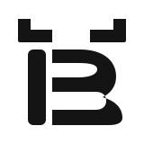

ByteFolk · minimal refinement
Horn + B + one AI eye. Everything else belongs to the mascot.
A · Open
No container; the most brand-like and flexible.
B · Contained
Best for GitHub avatar and product navigation.

C · One color
The structural test: no mascot details, no accent dependency.